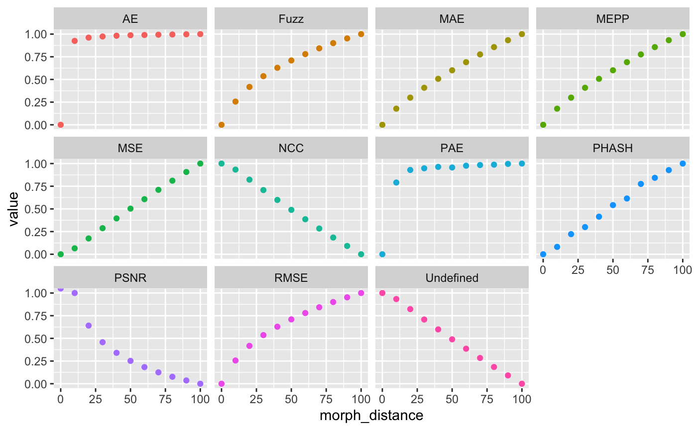
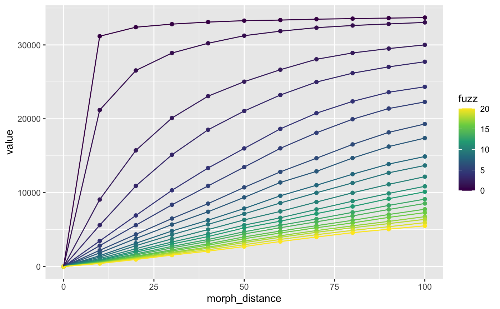

This article explores the use of {magick}’s image_compare function in the context of morphed images, since I couldn’t find any clear guides to what it was doing. I’ve implemented this for webmorph stimuli with the image_comp() function.
While this metric does capture something about similarity between morphed images, it is unlikely to be of any use as a metric for similarity between non-morphed images (e.g., it won’t be able to tell you if two face images are of the same person or not).
Create images to compare
stimuli <- demo_stim()
s <- continuum(stimuli[1], stimuli[2]) %>%
mask("face") %>%
subset_tem(features("face")) %>%
crop_tem()
plot(s, nrow = 1)
Calculate metrics
Using all the available metrics, calculate similarity of each image to the first image.
mtypes <- magick::metric_types()
names(mtypes) <- mtypes
m <- lapply(mtypes, image_comp,
stim = s,
ref_stim = s[[1]],
fuzz = 0,
scale = TRUE) # results scaled from 0 to 1
PSNR is Inf when the test and reference image are identical, so the highest non-infinite value scales as 1.0.
Check fuzz settings
m2 <- lapply(mtypes, image_comp,
stim = s,
ref_stim = s[[1]],
fuzz = 50,
scale = TRUE)Fuzz only does something for AE.

fuzzes <- seq(0, 20, 1)
names(fuzzes) <- fuzzes
m3 <- lapply(fuzzes, image_comp,
stim = s,
ref_stim = s[[1]],
metric = "AE",
scale = FALSE) # don't scale for this comparison
Conclusions
- Increases with morph distance:
- very strong negative exponential decay at 0 fuzz; more linear with higher fuzz: AE
- strong negative exponential decay: PAE
- slight negative exponential decay: Fuzz, RMSE
- linear: MAE, MEPP, MSE
- no idea: PHASH
- Decreases with morph distance:
- linear: NCC, Undefined
- slight exponential decay: PSNR